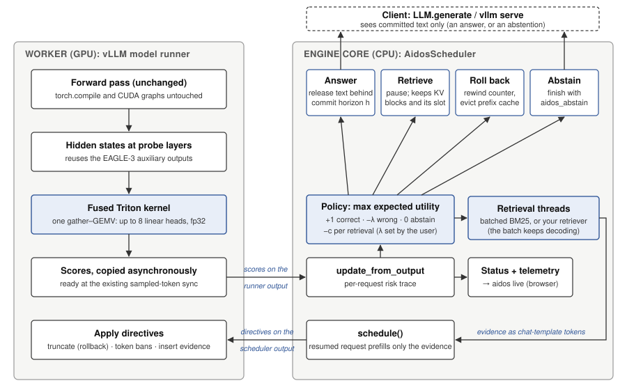
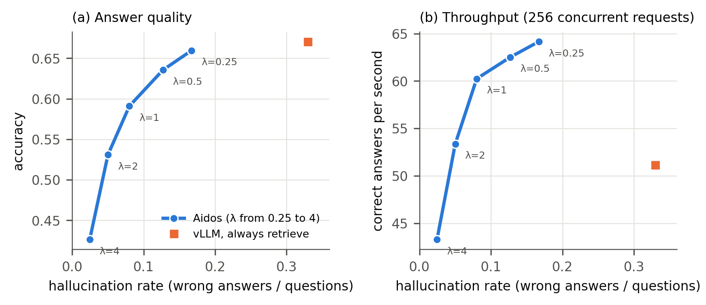

Aidos: answer, retrieve or abstain from inside the vLLM decode loop
A plugin for vLLM V1 that reads small linear probes from the model's hidden states at every step and acts on them in the scheduler: it decides whether to answer, fetch evidence or decline to answer, pauses a request with its KV cache intact while retrieval runs, and can roll back mid-answer, all token-exact with recomputation.
Try it in your browser (no GPU needed)
aidos verify: insertion,
rollback and retries reproduce recomputation token for token (24 of 24 prompts each).
Run it on your GPU
git clone https://github.com/belgium-waffle/aidos1
cd aidos1/aidos-vllm
pip install -e ".[bm25]" # pins vllm 0.21.*
aidos info
python examples/quickstart.py # three questions on a two-document corpus
# OpenAI-compatible server
aidos config bundles/qwen2.5-7b-instruct --lam 1 --retriever my_corpus.jsonl --status aidos_status.json -o aidos.json
AIDOS_CONFIG=$PWD/aidos.json vllm serve Qwen/Qwen2.5-7B-Instruct \
--scheduler-cls aidos.engine.scheduler.AidosScheduler --no-async-scheduling
aidos live --status aidos_status.json # the live view, on your own traffic
aidos verify --model Qwen/Qwen2.5-7B-Instruct --bundle bundles/qwen2.5-7b-instructHeads ship for Qwen2.5-7B / 32B, Llama-3.1-8B, Llama-3.3-70B, Mistral-7B and Qwen3-8B, each calibrated for λ ∈ {0.1, 0.25, 0.5, 1, 2, 4}. Retrievers: your own documents (BM25 in memory), a precomputed cache, a BM25 index, or any Python search function. MIT licence.
How it works

Results
- Exact: all eight engine checks match recomputation on every model, including tensor-parallel 70B.
- Better answers: higher utility than five adaptive-retrieval pipelines run in the same engine in 75 of 75 paired comparisons (48 of 48 on a sealed held-out set), with 0.40–0.57 times the hallucination of the strongest.
- Cost-aware: wrong on 6.9% / 3.8% / 1.7% of questions at λ = 1 / 2 / 4, where a reasoning model with search stays at about 25%, and 6–21 times faster.
- Cheap to run: 2–3% fewer requests per second than vLLM with the same scheduling (7B, 256 concurrent requests).

Throughput figure: Qwen2.5-7B, one H100, 256 concurrent requests, cached retrieval; measured on a 2,000-question test subset that over-represents TriviaQA (full-split numbers will replace it). Paper under review; source data in paper/.